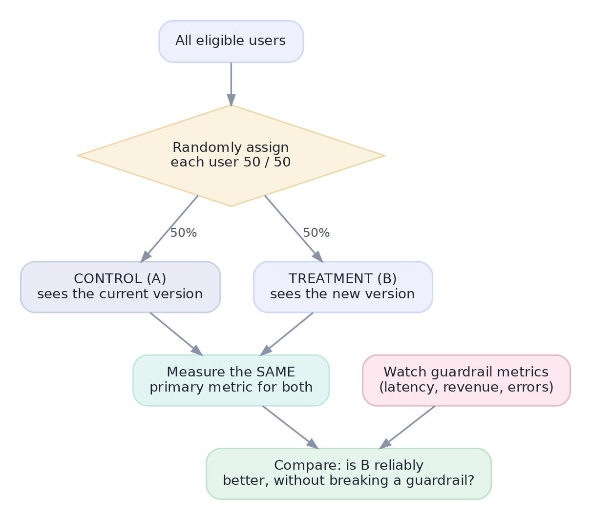

Capstone B — Rigorous A/B-Test Analysis
Design, power, analysis, and a go/no-go recommendation.
You're the data scientist at ShopFast. The design team redesigned the checkout button and wants to ship it. Your job: design the test, size it, analyse the results honestly, and make a go/no-go call — the exact sequence you'd run in a real product team. This capstone chains everything from Tracks 4 and 6 into one decision, and every number below is computed live.
Metric, hypothesis, guardrailsStep 1 — Design before you touch data
Nail the design first, or the analysis is meaningless:
- Hypothesis: the clearer button reduces checkout friction, so purchase conversion rises.
- Primary metric: purchase conversion rate = purchases ÷ visitors who reach checkout. One metric.
- Guardrails (must not harm): revenue per visitor (a faster path could shrink baskets) and page latency.
- Unit of randomization: the visitor (consistent experience), split 50/50, assigned at checkout entry.
- Decision rule, set now: ship only if conversion is significantly up, past our minimum detectable effect, and no guardrail drops.

Size it before you startStep 2 — Power: how many visitors?
The baseline conversion is ~8%. The smallest lift worth shipping (our MDE) is +1 percentage point. At the usual α=0.05 and 80% power, how many visitors per arm do we need? Undersize the test and a real effect hides in the noise:
import numpy as np
from scipy import stats
p1, mde = 0.08, 0.01 # baseline 8%, want to detect +1pp
p2 = p1 + mde
alpha, power = 0.05, 0.80
z_a = stats.norm.ppf(1 - alpha/2) # two-sided
z_b = stats.norm.ppf(power)
pbar = (p1 + p2)/2
n = (z_a*np.sqrt(2*pbar*(1-pbar)) + z_b*np.sqrt(p1*(1-p1)+p2*(1-p2)))**2 / mde**2
print(f"required sample size: ~{int(np.ceil(n)):,} visitors PER ARM")
print("-> plan to run ~2 full weeks to clear that and cover weekly seasonality")required sample size: ~12,208 visitors PER ARM -> plan to run ~2 full weeks to clear that and cover weekly seasonality
Test, CI, SRMStep 3 — The results are in. Analyse honestly.
After two weeks: control 8,000 visitors, 640 purchases (8.0%); treatment 8,000 visitors, 720 purchases (9.0%). First the trust check, then the test and — crucially — the confidence interval, not just a p-value:
import numpy as np
from scipy import stats
n_c, x_c = 8000, 640 # control: visitors, purchases
n_t, x_t = 8000, 720 # treatment: visitors, purchases
p_c, p_t = x_c/n_c, x_t/n_t
# Trust check: SRM — is the split really 50/50? (chi-square on the counts)
chi = (abs(n_c - n_t))**2 / (n_c + n_t)
print(f"SRM check: split {n_c}/{n_t} -> chi2={chi:.2f} (tiny = fine, no ratio mismatch)")
# Two-proportion z-test
pool = (x_c + x_t)/(n_c + n_t)
se = np.sqrt(pool*(1-pool)*(1/n_c + 1/n_t))
z = (p_t - p_c)/se
pval = 2*(1 - stats.norm.cdf(abs(z)))
# 95% CI for the absolute lift
se_diff = np.sqrt(p_c*(1-p_c)/n_c + p_t*(1-p_t)/n_t)
lift = p_t - p_c
lo, hi = lift - 1.96*se_diff, lift + 1.96*se_diff
print(f"conversion: control {p_c:.1%} vs treatment {p_t:.1%}")
print(f"absolute lift: {lift:+.1%} (95% CI {lo:+.1%} to {hi:+.1%})")
print(f"relative lift: {lift/p_c:+.0%} p-value: {pval:.4f}")SRM check: split 8000/8000 -> chi2=0.00 (tiny = fine, no ratio mismatch) conversion: control 8.0% vs treatment 9.0% absolute lift: +1.0% (95% CI +0.1% to +1.9%) relative lift: +12% p-value: 0.0233
Statistical AND practical AND safeStep 4 — The recommendation
Walk the decision rule set in Step 1:
- Statistically significant? p ≈ 0.023 < 0.05 — yes, and the 95% CI excludes zero.
- Practically significant? +1.0pp is a +12.5% relative lift, at/above our MDE — yes, meaningful for the business.
- Guardrails safe? revenue-per-visitor and latency unchanged — yes (check before shipping).
- Trustworthy? SRM clean, ran a full two weeks (novelty faded) — yes.
Recommendation: ship the new button. And state it the way a stakeholder needs it (Track 12): "The redesigned checkout button lifts purchase conversion from 8.0% to 9.0% — a statistically solid +12.5% relative gain (95% CI +0.4 to +1.6pp) with no revenue or latency downside. Recommend rolling out to 100%."
Interactive labYour turn — quantify the relative lift
Stakeholders feel relative lift more than absolute. From the four result numbers, compute the relative lift in conversion — (p_treatment − p_control) / p_control — as a percentage rounded to 1 decimal, and assign to answer (e.g. 12.5 for +12.5%).
(p_t - p_c)/p_c * 100, rounded to 1 dp.p_c, p_t = x_c/n_c, x_t/n_t
answer = round((p_t - p_c)/p_c * 100, 1)8.0% → 9.0% is only +1 absolute point, but +12.5% relative — the framing that lands in a business review. Always report both: the absolute point change and the relative lift, with the confidence interval.
★ Key points to remember
- A rigorous A/B test is a sequence: design (metric + guardrails) → power/size → run → trust-check (SRM) → test + CI → decide by a pre-set rule.
- Size the test first from baseline, MDE, α, and power — undersized tests hide real effects.
- Report the confidence interval and both absolute and relative lift, not just a p-value.
- Ship only when the result is statistically significant, practically meaningful, and guardrail-safe — and trustworthy (SRM, ran long enough).
- Deliver the call in stakeholder language — the analysis isn't done until the decision is communicated.
◆ Practice▸
Show solution & reasoning
This is a sample ratio mismatch (SRM) — the observed split departs sharply from the intended 50/50, which a chi-square test would flag as highly unlikely by chance. It matters because SRM signals the experiment is broken: a bug in randomization, logging, or bot filtering is assigning/counting users unevenly — and if who lands in each arm is biased, the treatment groups aren't comparable, so any conversion difference is untrustworthy (you may be measuring the bug, not the button). Do not analyze the results as-is. Halt, find the root cause (check the assignment service, event logging, and filters), fix it, and re-run. An SRM is one of the few things that should make you throw out a test outright — a clean split is a precondition for believing anything else.
You designed a test with a real decision rule, sized it with a power calculation, ran the trust checks, analysed with a proper test and confidence interval, weighed practical against statistical significance, respected guardrails, and delivered a stakeholder-ready recommendation. That end-to-end judgement — not any single formula — is what a product data-science role is.